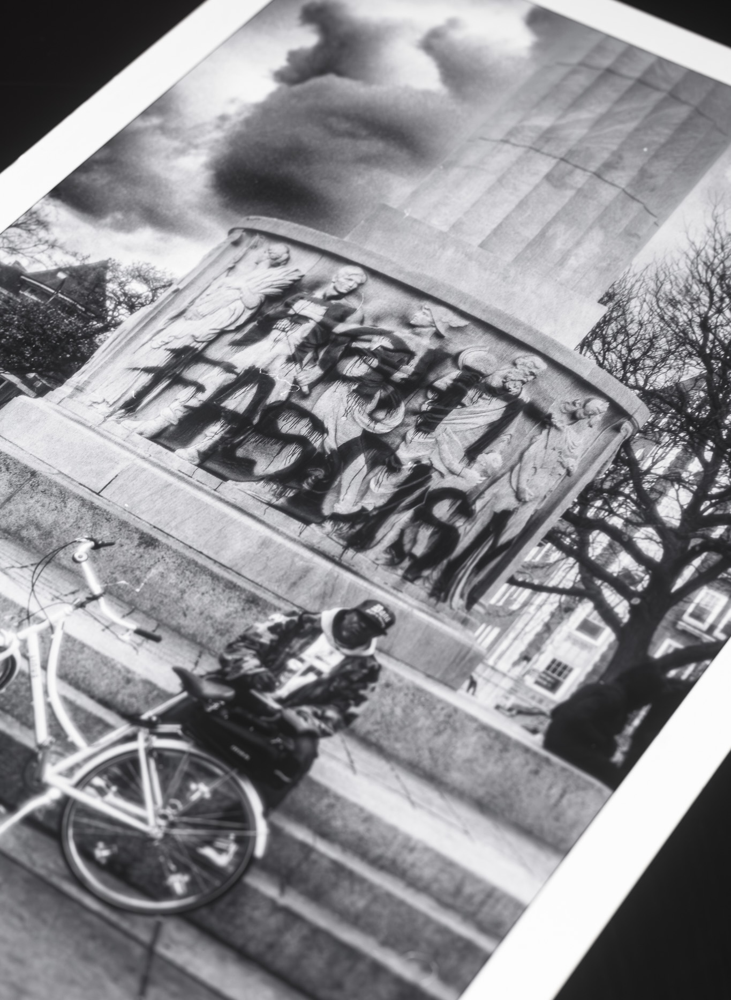
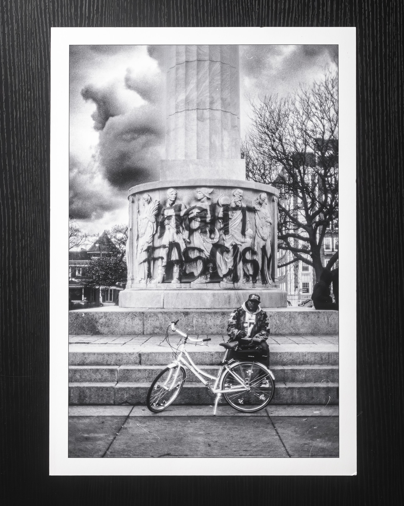
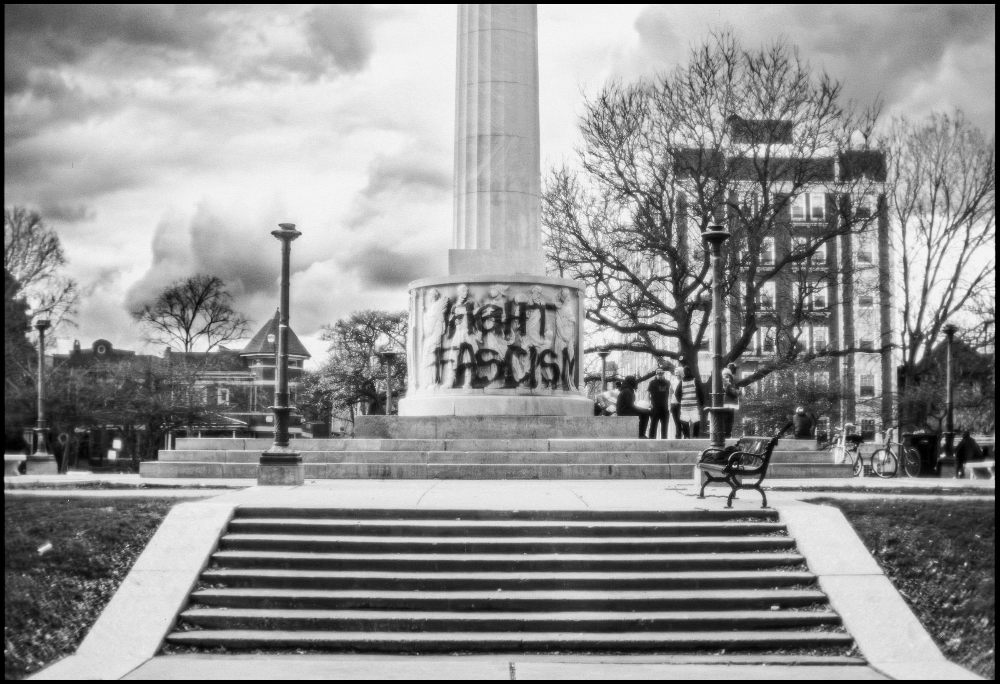

RESIDUAL
A black and white print from Logan Square documenting a monument, a message, and the tension held in one frame.



RESIDUAL — Logan Square, Chicago — November 11, 2024
Illinois Centennial Monument during Logan Square traffic circle reconstruction.
Public text, institutional stone, ordinary afternoon
RESIDUAL
Logan Square — Illinois Centennial Monument
A black and white photograph of a Chicago monument marked with the words FIGHT FASCISM, with a man sitting beside his bicycle in the same frame. Printed on Moab Juniper Baryta Rag, signed, and available in open and collector editions.
| Size | Edition | Price | |
|---|---|---|---|
| 8.5 × 11″ | Open | $100 | Order |
| 11 × 14″ | Open | $150 | Order |
| 13 × 19″ | Open | $185 | Order |
| 17 × 22″ |
Collector Limited to 15, numbered — 15 of 15 remaining |
$450 | Order |
| 24 × 36″ |
Collector Limited to 7, numbered — 7 of 7 remaining |
$750 | Order |
Each print is inspected, signed, and shipped directly by Tori Howard from Chicago.
Baryta holds the monument, graffiti, and human figure in one tonal field without flattening the emotional tension.
The image works as both street document and political residue, so the page needed the feel of a publication spread rather than a product shelf.
- Printed on Moab Juniper Baryta Rag
- Black and white fine art photography print
- Signed by Tori “Torsion” Howard
- Certificate of authenticity included
- Collector edition is individually numbered
- Free shipping on 8.5 × 11 and 11 × 14
- $15 standard shipping on 13 × 19 and larger
- Ships from Chicago
- Physical print only. All image rights remain with the artist.
- Prints up to 13 × 19 printed by artist. Larger sizes printed at Latitude Chicago.
About
This Print
RESIDUAL was photographed in Logan Square in 2024. I came across a monument marked with the words FIGHT FASCISM sprayed across the stone, and at the base a man sat beside his bike like it was any other afternoon in the city.
Nothing about the scene was staged. What held me was the mix of power inside one frame: the monument’s institutional weight, the risk of the graffiti, and the everyday calm of a person simply existing beside it. That tension is what made the photograph stay with me, and what made it deserve a life off-screen.

FIRST DAY — Women’s March, Chicago, January 21, 2017. Starting at $100.
View First Day